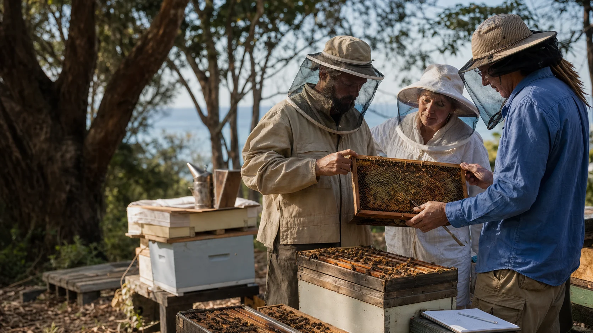

What should people choose?
Which details are useful as open stories, rough patterns, small-circle notes, or fully public examples?

The first lab question is not whether trouble could arrive one day. It is what local beekeepers are already seeing, how heavy the pressure feels, what support would help, and what level of detail people want to share.
Island Bee Health Census
A census can be scientific without being cold. Beekeepers bring the pattern: colony strength, losses, beetle pressure, mite worries, queen status, brood pattern, honey flow, treatment history and the local tricks that are already saving hives.
The lab adds shared methods, de-identified maps, microscopy, reporting help and a calmer way to compare what is working.
Which details are useful as open stories, rough patterns, small-circle notes, or fully public examples?
Which monthly checks can most beekeepers do without turning their lives into paperwork?
Which suspicious mites, beetles, larvae or brood symptoms should be photographed, labelled, checked and preserved?
What could be recorded
The working register should support beekeepers. It should not become a public hive map or a reason for people to hide problems.
Alcohol wash, sugar shake, sticky boards, brood checks, photo IDs and monthly mite load trends.
Trap counts, adult beetle sightings, larvae, slime-outs, soil risk and seasonal high-pressure notes.
Queen status, brood pattern, frames of bees, nutrition, recent splits and signs of stress.
What beekeepers are already trying, what is legal and registered, what seems to fail, and what needs expert review.
First 30 days
None of this needs a perfect institution first. It needs a trusted starting circle and simple tools that people can use.
A beekeeper-owned working register with opt-in sharing levels, from rough island patterns through to named public examples.
Photo, date, hive code, sample jar, microscope check, preservation and official reporting where required.
Monitoring tools, beetle traps, sample jars, gloves, hive record sheets and clear what-not-to-move guidance.
A short, careful report that says what local beekeepers are seeing and what partner help is being requested.